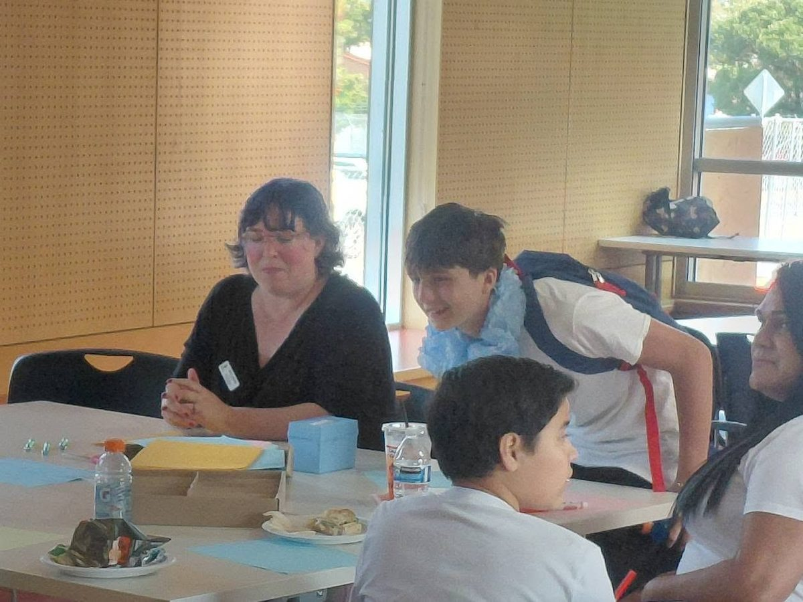

Mental health support

Understanding that emotional well-being is essential, we offer resources and supportive mentorship to help individuals manage stress, trauma, anxiety, and life pressures. Our team provides practical coping tools, check-ins, and connections to trusted mental health partners when needed.